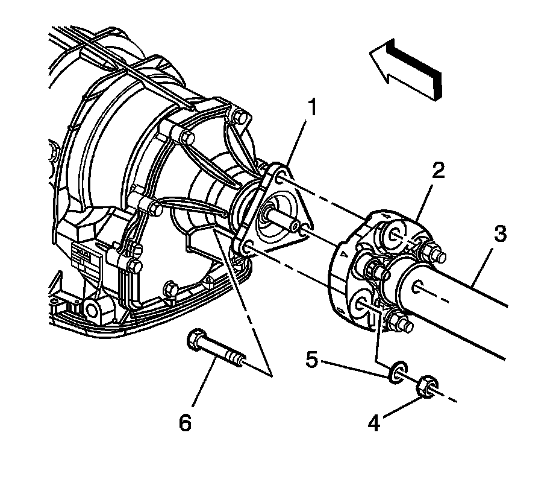
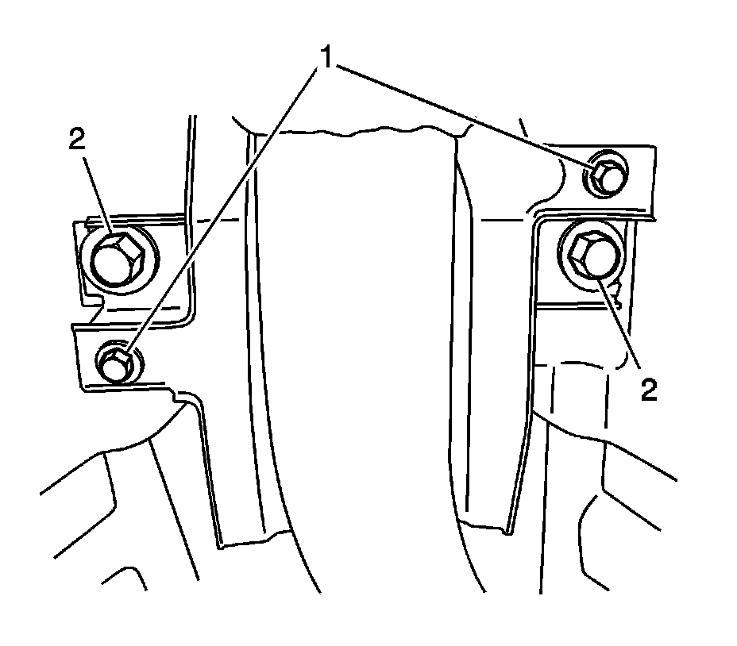

Rear Propeller Shaft Replacement (RWD)
Rear Propeller Shaft Replacement (RWD)
Notice: The propeller shaft must be supported during removal and/or installation so that the CV joint does not articulate more than 8 degrees. Allowing the propeller shaft to articulate greater than 8 degrees could cause damage to the CV boot. Damage to boot could lead to contamination or loss of lubrication which could lead to CV joint damage.
Removal Procedure
1. Raise and support the vehicle. Refer to Lifting and Jacking the Vehicle (Service and Repair) .
2. Remove the exhaust system. Refer to Exhaust System Replacement (Service and Repair) .

Important: Remove only the propeller shaft coupler-to-transmission flange bolts. Do NOT remove the coupler from the propeller shaft.
3. Remove the propeller shaft coupler-to-transmission flange bolts (6), nuts (4) and washers (5).

Important: Remove only the propeller shaft coupler-to-differential flange bolts. Do NOT remove the coupler from the propeller shaft.
4. Remove the propeller shaft coupler-to-differential flange bolts (6), nuts (4) and washers (5).

5. Support the propeller shaft at the support bearing.
6. Remove the bolts (2) securing the support bearing to the vehicle underbody.
7. Push the front propeller shaft (3) toward the rear of the vehicle in order to release the propeller shaft coupler (2) from the transmission flange (1).
8. While holding the front propeller shaft (3), lower the support device under the propeller shaft support bearing.
9. Remove the support bearing from the mounting studs.
10. Pull the rear propeller shaft (1) forward to release the coupler (2) from the differential flange (3).
11. Note the number and location of the shim packs between the support bearing mounting bracket and the underbody to ensure proper assembly.
12. Remove the propeller shaft from the vehicle.
13. Inspect the propeller shaft coupler for the following conditions:
* Splitting of the coupler
* Deep cracking. Minor superficial cracking of the coupler is acceptable.
* Looseness at the propeller shaft mounting bolts
* Distorted or missing mounting bolt bushings
14. If any of the above conditions are found, the propeller shaft requires replacement.
Installation Procedure
1. Using a clean shop towel clean the following:
* The differential flange centering pin
* The transmission flange centering pin
* The front propeller shaft centering bushing
* The rear propeller shaft centering bushing
2. Apply a small amount of lubricant GM P/N 1051344 (Canadian P/N 993037), or equivalent, to the front and rear propeller shaft centering bushings.
3. Inspect the propeller shaft to flange nuts (4), bolts (6) and washers (5). Replace if damaged or worn.
4. Install the rear propeller shaft coupler (2) to the differential flange (3).
5. Rest the support bearing on the support device.
Important: If reusing the propeller shaft-to-flange nuts and bolts, to ensure proper adhesion and fastener retention, the threads must be free of debris prior to the application of threadlocker.
6. Thoroughly clean the threads using denatured alcohol, or equivalent, and allow to dry. Apply threadlocker GM P/N 12345493 (Canadian P/N 10953488), or equivalent, to the propeller shaft to the flange bolt. Ensure that there are no gaps in the threadlocker along the length of the filled area of the bolt. Allow the threadlocker to cure approximately 10 minutes before installation.
7. Install the propeller shaft coupler-to-differential flange washers (5) to the propeller shaft coupler-to-differential flange bolts (6).
8. Install the propeller shaft coupler-to-differential flange bolts (6) and washers (5) to the differential flange (3) and propeller shaft coupler (2).
Notice: Refer to Fastener Notice (Fastener Notice) .
9. Install the propeller shaft coupler-to-differential flange nuts (4).
Tighten the propeller shaft coupler-to-differential flange bolts and nuts to 85 N.m (63 lb ft).
10. Push the front propeller shaft (3) to the rear of the vehicle and install the propeller shaft coupler (2) to the transmission flange (1).
Important: If reusing the propeller shaft-to-flange nuts and bolts, to ensure proper adhesion and fastener retention, the threads must be free of debris prior to the application of threadlocker.
11. Thoroughly clean the threads using denatured alcohol, or equivalent, and allow to dry. Apply threadlocker GM P/N 12345493 (Canadian P/N 10953488), or equivalent, to the propeller shaft to the flange bolt. Ensure that there are no gaps in the threadlocker along the length of the filled area of the bolt. Allow the threadlocker to cure approximately 10 minutes before installation.
12. Install the front propeller shaft coupler-to-transmission flange bolts (6) to the transmission flange (1) and propeller shaft coupler (2).
13. Install the propeller shaft coupler-to-transmission flange washers (5) and nuts (4).
Tighten the propeller shaft coupler-to-transmission flange bolts and nuts to 85 N.m (63 lb ft).
14. Install the center support bearing to the vehicle underbody.
Important: Ensure that the shim packs on the support bearing are installed in their original positions.
Raise the support device in order to hold the support bearing in position.
15. Install the center support bearing bolts (2) to the studs on the vehicle underbody.
Tighten the support bearing bolts to 50 N.m (37 lb ft).
16. Remove the support device from under the support bearing.
17. Install the exhaust system. Refer to Exhaust System Replacement (Service and Repair) .
18. Lower the vehicle.